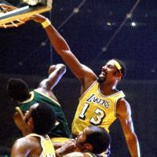
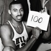

Wilt Chamberlain


Chamberlain's high school basketball career was astounding. In three seasons he scored more than 2,200 points. As a result more than two hundred universities recruited Chamberlain, but he wanted to get away from big cities and preferred to play in the Midwest. He chose the University of Kansas because of the recruiting by Hall of Fame coach Phog Allen.At Kansas Chamberlain continued his brilliant play on the basketball court, scoring fifty-two points in his first varsity game. During his first varsity season, he led the Jayhawks to the finals of the National Collegiate Athletic Association (NCAA) tournament, but they lost to North Carolina in double overtime. During his college career he averaged over thirty points per game and was twice selected to All-American teams. Following his junior year, he decided to quit college and become a professional. Because Chamberlain did not play his final season at Kansas, he was not eligible to join a National Basketball Association (NBA) team for one more year. He instead joined the Harlem Globetrotters and spent the year traveling the world and entertaining adults and youngsters alike. He later claimed that his year with the Globetrotters was his most enjoyable season of basketball
Back